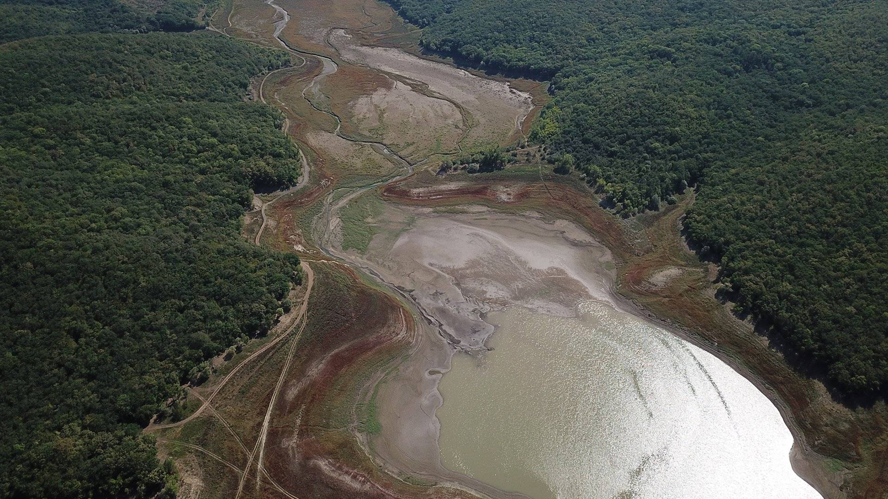
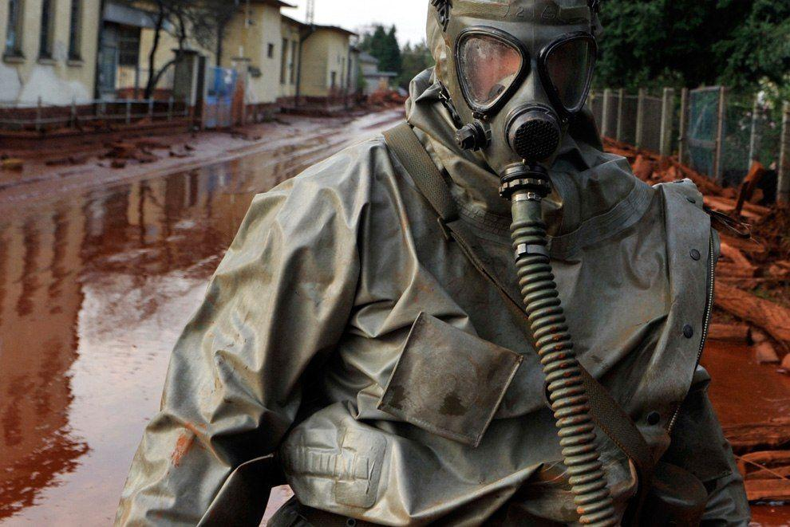

2010 год
 4 октября 2010 на западе Венгрии произошла крупная экологическая катастрофа. На заводе по производству алюминия взрыв разрушил плотину резервуара с ядовитыми отходами — так называемым красным шламом. Около 1,1 миллиона кубометров едкого вещества затопили 3‑метровым потоком города Ко Источник статьи журнал Новости в фотографиях, у которого все копируют контент - BigPicture.ru лонтар и Дечевер в 160 километрах к западу от Будапешта. Красный шлам — это осадок, который образуется при производстве оксида алюминия. При попадании на кожу он воздействует на нее как щелочь. В результате катастрофы 10 человек погибли, около 150 получили различные травмы и ожоги.